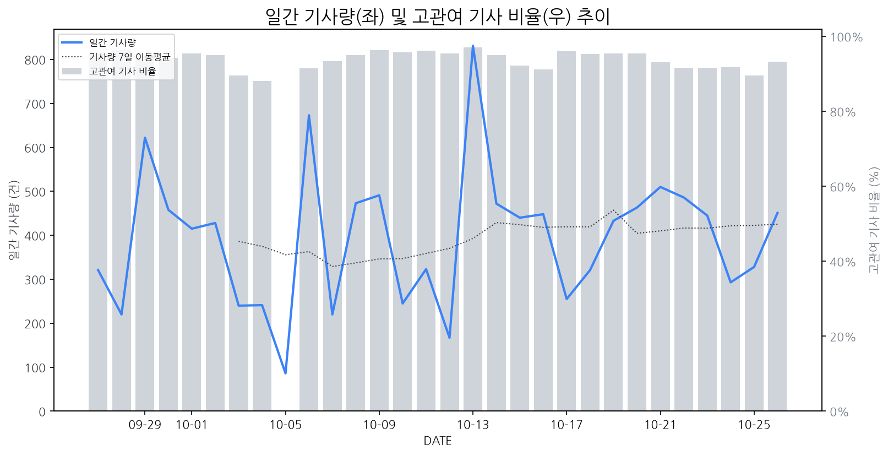

1
시장 활동 지표
기사량 추세 & 이상 징후 탐지
시장의 '전체 기사량'이 평소보다 비정상적으로 급증했는지(Spike)를 차트로 확인하고, LLM이 분석한 급등의 핵심 원인을 파악할 수 있음

고관여 기사란? 산업 연관 키워드로 수집된 기사들 중 디스플레이 키워드에 가중치를 반영하여 도출된 관련성 높은 기사
수집된 기사 수 (2026-10-26)
451
+4% WoW
기사량 변동 수준 (7일 이동평균 대비)
±6.7% 이하
2
오늘의 키워드
급격한 관심 ↑, 주목해야 할 키워드
1
아이패드
+5.7σ
애플이 OLED, 방수, AI 성능 강화된 신형 아이패드 미니를 공개하며 큰 관심을 받고 있습니다.
Related Metrics
금일 언급량: 19, 전일 대비: +18
Interpretation
OLED 채택 확대 기대
Next Step
'아이패드' 관련 상세 기사 및 경쟁사 반응 모니터링
2
애플
+4.9σ
애플의 신형 아이패드 미니, 아이폰 듀오 관련 소식으로 OLED 채택 및 폴더블폰 이슈가 부각되었습니다.
Related Metrics
금일 언급량: 41, 전일 대비: +27
Interpretation
OLED 채택 확대로 수혜 기대
Next Step
주요 기업 '애플'의 이벤트가 감지되었습니다. 4번 섹션(주요 기업 EVENTS)에서 상세 내용을 확인하세요.
3
삼성전자
+3.1σ
삼성월렛 중국 결제 지원 및 이재용 회장 취임 4주년 실적 호조 소식이 복합적으로 작용하며 급등했습니다.
Related Metrics
금일 언급량: 18, 전일 대비: +17
Interpretation
삼성전자의 사업 확장 기대
Next Step
핵심 토픽 'Foldable_Display_Topic' 관련 신호입니다. 3번 섹션(키워드 감성분석)에서 해당 토픽의 감성 변동을 교차 확인하세요.
4
텐센트
+3.0σ
삼성월렛의 중국 QR 결제 지원을 위한 텐센트 및 우리은행과의 협력이 핵심입니다.
Related Metrics
금일 언급량: 7, 전일 대비: +7
Interpretation
중국 시장 확대 기대
Next Step
'텐센트' 관련 상세 기사 및 경쟁사 반응 모니터링
3
실시간 Risk 키워드
경계해야 할 시그널 탐지
특정 토픽의 부정 감성 점수가 급등할 때 이를 즉시 탐지하고, "근거 기사" 링크를 통해 리스크의 실체를 빠르게 파악할 수 있음
키워드 분석 결과, 오늘은 걱정할 만한 하락 신호가 없습니다. (부정 언급량 변화: +1.5σ 이내)
4
주요 이벤트 모니터링
실시간 산업 동향 파악을 위한 주요 활동
최근 발생한 주요 기업들의 신제품 출시, 투자 등 주요 이벤트를 제공하여 매일 경쟁사 동향을 확인할 수 있음
반도체 가격 상승('칩플레이션')과 중국 디스플레이 기업들의 저가 공세라는 악재가 겹쳐 한국 디스플레이 산업이 어려움에 직면했다. 이는 K-디스플레이 시장 경쟁력 약화와 수익성 악화로 이어질 수 있는 상황이다.
Impact
이번 이벤트는 K-디스플레이 기업들의 시장 점유율 감소 및 수익성 악화를 야기할 수 있으며, 기술 개발 및 프리미엄 시장 경쟁에 대한 부담을 가중시킬 수 있다.
Next Step
수익성 확보를 위한 고부가가치 제품 라인 강화와 원가 절감 노력을 병행하며, 중국과의 기술 격차를 벌릴 수 있는 차세대 디스플레이 기술 개발에 집중해야 한다.
자율주행 및 AI 기술 발전이 시스템반도체 시장 성장을 견인하고 있으며, 이러한 성장세 속에서 실제 양산 성과 확인이 중요한 과제로 떠오르고 있습니다.
Impact
시스템반도체 수요 증가는 고성능 디스플레이 패널 및 관련 기술에 대한 투자를 촉진하여 디스플레이 시장의 기술 혁신과 성장을 가속화할 수 있습니다.
Next Step
차세대 디스플레이 기술과 AI, 자율주행용 반도체 간의 시너지를 고려한 R&D 투자 및 파트너십 강화 전략을 수립해야 합니다.
애플이 오는 28일, 2021년 이후 가장 큰 변화를 담은 터치스크린 맥북 프로를 출시할 것으로 예상된다. 이는 맥북 라인업에 터치스크린 기능이 새롭게 도입될 수 있음을 시사한다.
Impact
맥북 라인업에 터치스크린이 도입될 경우, 노트북 디스플레이 시장에서 터치 기술 채택률을 높이고 관련 패널 및 부품 수요에 긍정적인 영향을 미칠 수 있다.
Next Step
터치스크린 디스플레이 기술 개발 및 생산 능력 확보에 집중하여 애플을 비롯한 주요 노트북 제조사들의 잠재적 수요에 대비해야 한다.
새롭게 출시된 아이폰 듀오 모델에서 출시 사흘 만에 디스플레이 파손 제보가 잇따라 발생하며 논란이 확산되고 있습니다. 이는 소비자의 신뢰도 하락과 함께 제품에 대한 품질 우려를 증폭시키고 있습니다.
Impact
이번 디스플레이 파손 이슈는 향후 아이폰 판매량 감소뿐만 아니라, 경쟁사 디스플레이 패널 공급망 및 관련 기술 개발 투자에도 부정적인 영향을 미칠 수 있습니다.
Next Step
디스플레이 제조 기업은 즉각적인 원인 규명과 함께, 패널 내구성 강화 및 품질 관리 시스템 개선을 통해 신뢰 회복에 집중해야 합니다.
구광모 회장이 8년간 LG 그룹을 이끌며 미래 성장을 위한 전환을 성공적으로 추진했다. 특히 전장, 로봇, AI 등 신사업 육성에 집중하며 그룹의 체질 개선을 이끌었다는 평가를 받는다.
Impact
LG의 지속적인 미래 성장 동력 확보 노력은 디스플레이 사업 부문에서도 혁신적인 기술 개발 및 신규 시장 개척을 촉진하여 시장 경쟁 구도에 영향을 줄 수 있다.
Next Step
경쟁사의 미래 사업 투자 동향을 면밀히 분석하고, 핵심 기술 확보 및 신규 애플리케이션 발굴을 통해 차별화된 경쟁력을 강화해야 한다.